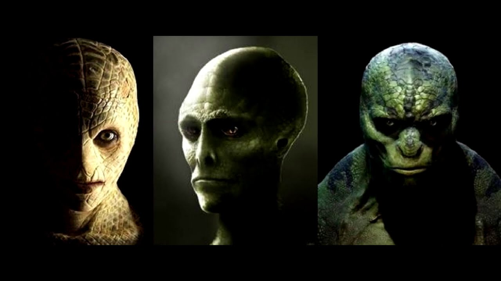
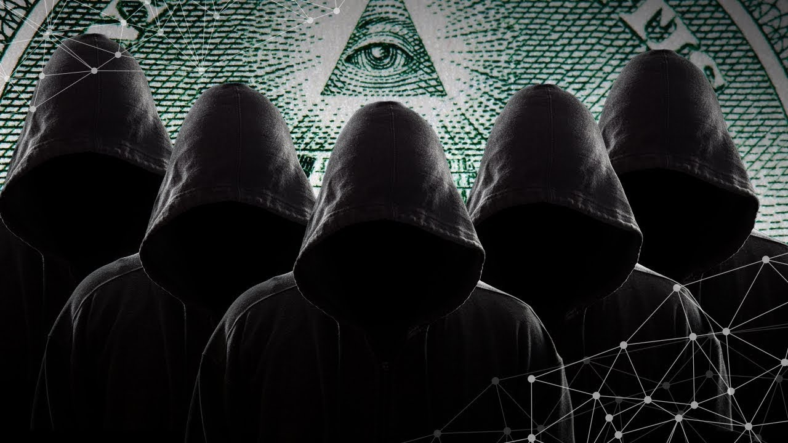

Если вы зашли сюда то думаю вам интересна инфа о массонах и рептилоидах
Заранее предупреждаю, что в этом разделе лучше не сидеть в присутсвии посторонних. В противном случае белая палата вам обеспечена.
Начнём с базовой информации об этих неизученных сообществах.
Эти люди – главные игроки Международной площадки. В своём большинстве они принадлежат к одной из тринадцати (наше подчёркивание при переводе) богатейших семей мира, и именно они являются теми, кто правит миром из-за кулис (почти все они мужчины за редким изключением). Они – «Чёрная знать», те, кто принимает решения, кто пишет правила для президентов и правительств. И они избавлены от испытующего общественного взгляда, потому что их действия в принципе не заметны. Их родословная уходит корнями на многие тысячелетия, и они тщательно оберегают чистоту своей крови из поколения в поколение. Единственный путь это сделать – кровосмешение.
Их власть основана на тайном знании и на экономике – деньги обеспечивают власть. Иллюминатам принадлежат международные банки, нефтяной бизнес, самые мощные производства, торговые организации, они наводнили политические структуры, они купили большинство правительств – или, по меньшей мере, контролируют их (наше подчёркивание при переводе). Для примера взгляните на выборы президента Америки. Не секрет, что побеждает кандидат, спонсирование которого деньгами было больше, так как это даёт возможность низложить другого кандидата.
А кто спонсирует «правильного» кандидата? Иллюминаты. И это происходит гораздо чаще, чем они позволяют стране поиграть, не спонсируя никого. Они решают, кто будет следующим президентом, и внимательно следят, чтобы он победил, даже если им придётся жульничать, как, например, во Флориде, когда Джордж Буш Младший «победил» Альберта Гора. Большинство президентских кампаний финансируется деньгами от наркобизнеса, ведь, как вы понимаете, иллюминаты контролируют наркобизнес и позволяют ему существовать (наше подчёркивание при переводе). На самом деле, им вообще не нужны выборы, но таким образом они дают нам поиграть, почувствовать, что от нас что-то зависит – так они делают вид, что Конституция соблюдается.
Но разве президент что-то решает? Последнее слово не за ним. Власть принадлежит не политикам, а иллюминатам, многие из которых международные банкиры. Ведущие кандидаты в президенты тщательно выбираются из числа оккультных линий крови тринадцати семей иллюминатов, и если изучить родословную президентов Соединённых Штатов от начала и до наших дней, мы увидим, что все они без исключения принадлежат к одной и той же королевской линии, что все они – одна «семья». Они связаны предками и фамильным деревом. Королевская линия – эквивалент термину иллюминаты.
Каковы же цели иллюминатов? Создать Единое Мировое Правительство и Новый Мировой Порядок , в котором на вершине будут они, и они будут править миром, повергнутым в рабство и фашизм (наше выделение при переводе). Это очень древняя цель, и чтобы осознать её в целом, надо понимать, что она не из тех целей, что достижимы за жизнь одного поколения. Это цель, которая может быть достигнута медленно и за довольно долгое время.
Image Hosted by ImageShack.us
Эта цель разрабатывалась вдали от надоедливой толпы, внутри тайных обществ. Все тайные общества с их системой посвящений – орудие иллюминатов, полностью ими контролируемое. Наиболее широко известны вольные каменщики масоны. Люди, управляющие тайными обществами и иллюминатами – оккультисты и сатанисты, практикующие чёрную магию. Их богом является люцифер – несущий свет, просветитель. А с помощью оккультных практик они управляют массами и влияют на них. Не важно верите ли вы в это, или верю ли я, потому что они всё равно это делают. И они подходят к этому очень серьёзно.
Не правда ли страшно подумать, что эта чёрная магия (наше подчёркивание при переводе) правит нашей планетой, на которой само существование магии не считается возможным. Если кто-то заговорит о реальности магии, его, скорее всего, поднимут на смех. После фильмов вроде «Властелина колец» (3), люди захотели, чтобы в их жизни было больше магии. Блаженны неведающие!..
Из оккультизма выросли практики управления сознанием. Взяв под опеку кинопроизводство, записывающие компании, и контролируя все изящные искусства, они научились управлять подростками, заставляя тех танцевать под свою дудку и принимать ту версию реальности, которую им навязывают хозяева искусств. Это не лишено смысла, если взглянуть на те «развлечения», в которые нас втягивают.
Музыка, которую обречены слушать подростки, чаще всего некачественна и приводит их к «роботизму» , апатии, насилию и наркотикам. Она также изпользуется для контроля сознания, как мы увидим далее. По-настоящему хорошую музыку записывающие компании отвергают, отдавая предпочтение безталанным недоучкам. Начиная с Black Sabbath и Rolling Stones начала 70-х, сатанизм активно продвигают через музыку. Много групп пошли по их пути, и всех их агрессивно разкручивали, рекламировали и издавали широкими тиражами.
То же касается и Голливуда, который также был создан и по сей день руководится иллюминатами. Все эти космические войны, картины о Судном Дне, фильмы-катастрофы снимаются, чтобы подтолкнуть нас в определённом направлении. Фильмы о сатане тоже стали популярны. Всё, чтобы приготовиться к часу X.
Я говорил выше, что люди управляющие иллюминатами являются членами тринадцати богатейших семей, власть передавалась от отцов к сыновьям из поколения в поколение. Их личности во все времена были тщательно охраняемым секретом. Однако ничто не может оставаться тайной навеки, и рано или поздно произойдёт утечка. Так и в нашем случае. Немногие знают о том, что именно это за семьи, но недавно этот секрет был разкрыт, благодаря членам иллюминатов, покинувшим Орден и открывшим наиболее замечательные сведения. Итак, далее приводятся 13 семей – тайное правительство.
1.Астор (Astor)
2.Бунди (Bundy)
3.Коллинз (Collins)
4.Дю Понт (DuPont)
5.Фримэн (Freeman)
6.Кеннеди (Kennedy)
7.Ли (китайская семья) (Li)
8.Онассис (Onassis)
9.Рокфеллер (Rockefeller)
10.Ротшильд (Rothschild)
11.Рассел (Russell)
12.ван Дуйн (van Duyn)
13.Меровинги (все европейские королевские семьи) (Merovingian)
Следующие семьи также связаны с вышеприведёнными:
1.Рейнольдс (Reynolds)
2.Дисней (Dysney)
3.Крупп (Krupp)
4.Мак Дональд (McDonald)
Кроме того, в добавление к этим четырём, существуют сотни других, которые более отдалённо связаны с тринадцатью главными линиями иллюминатов. Хотя они и важны, здесь они не упоминаются. Тринадцать элитных семей считают их менее могущественными и менее чистыми.
Image Hosted by ImageShack.us
Обо всех упомянутых семьях можно детально прочесть в великолепной книге Фрица Спрингмейера: «Семьи иллюминатов» .
Тайные общества
Тайные общества были представлены в истории человечества с давнего времени. Всё началось тысячи лет назад с «братства змея», тайного общества, которое ссылалось на сатану (великого змея), способного помочь людям вернуться в Эдем. Иллюминаты считают сатану добрым богом, а Ветхозаветного Бога злым. Они считают, что сатана дал людям знания, в то время как Бог пытается помешать этому. С этих позиций был разработан сатанизм, и он практикуется внутри тайных обществ и по сей день.
Существуют различные теории о происхождении тайного знания в тайных обществах.
Упомяну здесь о двух самых разпространённых:
Шумерские надписи 6000-летней давности, представляющие собой каменные плиты, разсказывают об аннунаках – «пришедших из Рая». Согласно таким исследователям, как Захарий Ситчин, Дэвид Ике, Вильям Брэмли 6, аннунаки были теми богами, что упомянуты в Ветхом Завете. Они были инопланетянами, пришедшими на Землю и создавшими людей как рабов для себя. Шумерские писания говорят об Ану, который был правителем анунаков, и об Эа (Энки), чьим эквивалентом является сатана. Говорится, что он был единственным, кто дал людям знания в саду Эдема и создал первое тайное общество – пресловутое «братство змея». Говорится, что аннунаки явились на Землю, с целью освоения её ресурсов, и в первую очередь золота, которого не хватало на их планете, хотя оно являлось важным элементом их атмосферы. Этот Эа, будучи великолепным учёным, создал человека, как гибрид примитивной земной жизни и расы пришельцев.
(Примечание: Если у читателя возникнут проблемы с принятием мысли о пришельцах, как о части этой теории, то он может легко отбросить такую трактовку событий и продолжать читать далее. Вы, несомненно, найдёте безспорные доказательства моей теории на этом сайте, считая пришельцев причастными, или же нет. Однако если вам захочется подробнее ознакомиться с тем, что касается роли пришельцев в этой истории, я советую посетить сайт Disclosure Project 7 и посмотреть The Disclosure Project Video. Примерно 500 работников правительства свидетельствуют о плане пришельцев и о том, что они среди нас. И все они хотят обратиться в суд для дополнительной дачи показаний на публике. Это видео убедило меня и многих других, кто на сто процентов был уверен, что план пришельцев был дезинформацией. Прошу вас, оставайтесь скептичны во время просмотра этого видео, но не стоит быть скептиком сверх меры. То же самое касается и информации на моём сайте. Полное собрание откровений этих более чем пятисот членов правительства собраны в книге «The Disclosure Project», которую можно заказать на их сайте. В книге также приведены реальные секретные документы, которых много и на сайте).
Image Hosted by ImageShack.us Энки (Эа) сидит на стуле справа
Сначала люди предназначались только для служения и не могли размножаться. Позже это изменилось. Эа не нравилось, что созданные им существа были низшей расой. Он хотел просветить их, научить их тому, кто они такие, и откуда они взялись. Он также хотел разсказать им, что каждое человеческое существо – это дух, вселённый в тело, и после смерти тела, он продолжает жить и вновь воплощается в тело на Земле.
Дэвид Ике, который изучал иллюминатов на протяжении десятилетий, утверждает, что верховные рода иллюминатов – это меняющие форму рептилии, пришельцы не из космоса, но из другого измерения, и что это ОНИ – «боги» аннунаки. Согласно его мнению, именно они ответственны за все тайные общества. Эти существа обладают способностью менять обличье на человеческое, и Ике говорит, что он знает сотни очевидцев, видевших, как они превращаются обратно в рептилий.
Христианское воззрение на этот факт заключается в том, что аннунаки на самом деле были гигантами, ходившими по земле, о которых повествует Библия. Эти гиганты были нефилимами (nephilim), возставшими против Бога и за это свергнутыми на Землю из Рая во главе со своим предводителем – сатаной. Христианство объясняет теорию превращений тем, что пришельцы на самом деле демоны и нефилимы. Они утверждают, что люди, которых видели меняющими форму, на самом деле просто одержимы демонами из-за своих занятий чёрной магией. И иногда демоны «проглядывают через человека» и являют себя в виде рептилий или «серых пришельцев». Может быть разные заключения – разные точки зрения на одно и то же?
Какой бы ни была правда, определённо что-то происходит. Существует слишком много свидетельств, и в эпоху интернета людям по всему миру стало проще общаться.
Это, возможно, стало причиной того, что сейчас мы слышим так много об этом явлении, о котором так долго умалчивали. В интернете нельзя укрыть информацию. С другой стороны, мы не можем возпринимать каждого, выступающего в интернете всерьёз, потому что информация наподобие этой может вызвать психологическую цепную реакцию. Некоторые люди «верят», что они пережили что-то, чего на самом деле не было. Это не религиозный сайт, поэтому я не стану разпространяться об этом, тем более, что я не знаю ответов на многие вопросы. Напротив, сайт одной из своих целей ставит объяснение ситуации в мире с как можно более объективной точки зрения.
Image Hosted by ImageShack.us
Правда заключается в том, что на протяжении всей истории за её кулисами находились тайные общества. Первоначальное братство разпалось на многочисленные культы и секты, в связи с конфликтом в верхушке. Появились различные полюса управления, которые тайно боролись друг с другом (и до сих пор продолжают) невидимые для невежественного большинства. Они изобрели различные религии, секты и культы так, чтобы люди были заняты ерундой вместо того, чтобы обратить внимание на то, чем на самом деле занимается братство. Они стали управлять церквями, чтобы поработить людей [На третьем приоритете управления, владея первым (наше примечание при переводе)] и втравить их в межконфессиональные розни. Большинство войн идеологизировалось как войны «за веру».
Из первоначального братства вышли масонские ордена, розенкрейцеры, тамплиеры, Ordo Templi Orientis 8, мальтийские рыцари и другие. Кто-то может возразить, что масонство – благотворительная организация и даже христианское общество. Да, всё это там говорят, и в это верит большинство рядовых членов ордена. Подавляющее большинство масонов – добрые люди, невежественные относительно того, что происходит на высших уровнях. Они не ведают, что над ними стоят сатанисты и почитатели тёмных сил. Они не служат Богу, они поклоняются сатане или люциферу, и в этом суть происходящего в современном мире.
Сатанисты
Тайные общества, управляемые иллюминатами, имеют тайные степени посвящения – пирамидальная структура, люди в которой не знают того, что знают посвящённые более высоких ступеней. Вы не сможете так просто стать масоном, необходима рекомендация двух членов ложи, и, кроме того, досье на соискателя тщательно изучается, прежде чем ему будет позволено вступить в ложу. Если хотя бы один член совета скажет: «Нет», – по поводу членства нового человека, то его не примут. Каждого вступающего тщательно изучают на предмет пользы, которую братство может из него извлечь. Это не значит, что они принимают только «плохих» людей. Напротив:
Официально большинство обществ – благотворительные организации. Это, и пропаганда о том, что организации вроде масонства являются христианскими, служит причиной, по которой большинство вступает в них. На самом же деле эти организации имеют эзотерические учения, тайные степени посвящения, и каждый член общества клянётся в верности, прежде всего, братству. Это значит, что если человек занимает какой-либо общественный пост (например, президента), то он в первую очередь подчиняется братству, а потом уже думает о долге президента. Таким образом, он служит двум господам. О «братьях» с хорошей репутацией всегда заботятся и охраняют, пока они могут быть полезны организации и следуют её правилам. Если он не оправдывает доверия или выдаёт секреты, его трагическую судьбу поставят в пример другим (иногда подобное чревато смертью). Чрезвычайно важно, чтобы секреты оставались секретами. Если бы эта информация разпространилась бы, братство потеряло бы власть над обществом, и вся его пирамида развалилась бы. Иллюминаты боятся быть разкрытыми, боятся, что люди в ярости уничтожат их, узнав об их преступлениях.
Image Hosted by ImageShack.us
Многим масонам на низших степенях на самом деле нравится быть членами лож. Это и «чувство принадлежности» к организации, и некоторые секреты мироздания, которых не услышишь в школе.
Правящие миром иллюминаты - не Земляне
17.01.2011 16:12 Циклы других статей - Мировое правительство
Не так давно в США на прилавках магазинов появилась книга конспиролога Дэвида Айка. Он изучал иллюминатов несколько десятков лет и считает, что руководство ордена, его внутренние круги издревле состоят не из людей, а из рептоидных пришельцев, способных принимать человеческий облик. В своих «Детях матрицы» Айк утверждает, что знает сотни очевидцев, видевших, как эти существа превращаются обратно в рептилий.
У него появилось немало последователей, и сейчас в Интернете можно прочесть, к примеру, такое: «Причина скрещивания и наличия исключительно родственников в верхушке иллюминатов в том, что частотное поле их ДНК очень близко к полю ДНК рептилий из другого измерения и совместимо с ним. Схожие частоты позволяют рептилиям и прочим сущностям брать под контроль тела иллюминатов намного эффективнее, чем тело обычного человека...»
Из-за чего происходят экономические кризисы, локальные и мировые войны, смены государственной идеологии и прочие политические неурядицы? Случается ли это спонтанно, хаотически, под влиянием абстрактных исторических закономерностей и активности Солнца или же за всем этим стоит некая могущественная целенаправленная сила? В последнее время все большую популярность приобретает точка зрения, согласно которой за большинством важнейших исторических событий стоит деятельность ряда тайных, тщательно законспирированных обществ. И наиболее влиятельным в этом ряду является таинственный орден иллюминатов.
Некоторые конспирологи, основываясь на масонской легенде, считают, что историю этого ордена надлежит исчислять сроком аж в 6 ООО лет - начиная с того времени, когда то ли внеземные, то ли потусторонние силы явили шумерским жрецам некую Книгу Власти, записанную на камне. А вслед за шумерами легендарную Книгу скопировали на папирусы египтяне и с тех пор хранили в строжайшей тайне.
Иногда можно встретить утверждения, что этот секретный орден ученых, хранящих тайные знания от простых смертных, существовал еще в Античности, и многие известные и поныне столпы древнегреческой мудрости входили в его ряды.
Как о близком или даже тождественном иллюминатам обществе специалисты говорят и о та называемых филадельфах. Тогда с ними быстро расправился королевский рыцарь Гийо де Ногаре, хорошо известный по разгрому ордена тамплиеров. XVII веке филадельфы вновь объявились в Англии, а спустя столетие — во Франции, однако там уже это название присвоила себе одна из масонских лож...
Аннунаки, «создавшие» людей — рептилии
Вызывает некоторое сомнение утверждение того, что меня сотворили аннунаки, обитатели планеты Нибиру. Почему? Да ведь аннунаки – рептилии, ящеры! Почему, спросите? Да просто, потому что они рептилии. Я даже специально искал в информацию на тему «рептилии ли аннунаки«, ну и что тут искать, посмотрим хотя бы как изображали аннунаков шумеры.
Явные – рептилоиды, ящерицы, называть их гуманоидами было бы неправомочно.
Мне, лично, как то неприятно знать, что мой предок был инопланетной рептилией, ящером, путь даже разумным.
Создание человека, согласно Библии, произошло именно этими существами, они назывались там эло(х)им, что было переведено как Бог. Но это множественное число! Значит Боги. Не один Бог творил человека, а много этих Богов. Мы их называем аннунаками. Ведь, творение человека в Ветхом Завете Библии копирует тексты шумерских табличек, которые переводил Захария Ситчин, и где он вычитал про Нибиру.
«Планета Нибиру» в текст Библии не вошла, а боги там стали единым во множестве богом.
Когда я спрашивал у батюшки, были ли Адам с Евой чернокожими, чёткого ответа не последовало А спрашивал я, ещё, не зная ничего о инопланетных рептилиях-аннунаках. Хотя уже предлполагал, что в Ветхом Завете описаны не какие-то сказки а вполне реальные события.
И ещё одно ошибочное мнение, касаемо Библии — что там описано создание человеческой расы, как таковой. На самом деле то, что описано там – генетический опыт, по скрещиванию рептильной расы эло(х)им, вероятно, с генетически материалом обезьяны, или… чернокожих людей. В результате этих генетических опытов получена серая раса. Дополнительно к существовавшим краснокожим, чернокожим людям, к белым и к жёлтым. Иначе, как бы мог родиться, скажем чернокожий, у двух белых родителей только с белыми в роду?!
Итак, аннунаки-рептилии создали на Мидгард-земле расу серых, гибридов рептилий с приматами. В это трудно поверить, но — так утверждается в древних текстах о творении.
А для чего там сказано, рептилии аннунаки создали людей? Для того, чтобы работать, разумеется, добывать для них золото. Золото они распыляют в атмосфере своей планеты (по слухам от того же Захарии Ситчина). А сейчас всё золото вывезенное с планеты складируется на луне.
Так вот, дорогие мои соплеменники, налицо присутствие на планете двух соперничающих рас (живущей здесь гуманоидной и оккупантской рептилоидной, вывозящей золото и прочие богатстве недр). Вот гляньте ка, на следующее видео.
Возможно, видеомонтаж, скажете. Да и какое отношение имеют узкие зрачки именно к рептилиям? Может быть — кошачьи?! (Кстати, по некоторым сведениям кошачьи выведены рептилоидами на Земле в качестве генетического опыта. Зато, по другим сведениям, кошачьи прибыли с на Мидгард вместе с нами) Ну, правильно, конечно. Давид Айк, известный разоблачитель тайного мирового правительства, тоже утверждает, что раса рептилий скрестилась с расой гуманоидов и втихаря прибрала и власть и финансы на Земле в свои руки. И правда, если вы считаете, будтокаждый мусорщик может стать президентом США, то вы сильно заблуждаетесь. Практика показывает, кто президентом США становится только представитель королевской династии. А королевская династия – тоже взялась не с потолка.
Символ многих королевских династий Европы, например, лев, как и символ левитов. И именно левиты – чистокровные потомки аннунаков-рептилоидов на нашей планете. И именно аннунаки-рептилоиды дали толчок к развитию технократической цивилизации на Земле, конец которой скоро и предрекают славянские пророчества.
Эти рептилии – представители серой расы, созданной рептилиями-аннунаками, создание которых и описывается в книге Бытия Библии. Раса рептилий активно скрещивается со всеми земными расами, с чёрной, белой, с жёлтой и с вероятно даже с красной, главным признаком «рептильности» является ген, внесённый в геном человека рептилиями.
Но не стоит бегать по улице, заглядывая в зрачки проходящих людей. Потомка рептилий-аннунаков вы вряд ли встретите просто так на улице. Аннунаки – в Белом Доме, в Правительстве, в банках. Они контролируют всю деятельность технократической цивилизации людей, власть и финансы.
Скоро, когда прилетает планета Нибиру, они должны бы покинуть планету, эвакуироваться, согласно Межпланетному Договору. Это красочно описывает Книга той же Библии, Апокалипсис.
Если кто читал, эвакуируются на «новую землю» с «новым небом» только лишь представители 12-ти колен израелевых, в количестве 14400 человек.Гипотетическая родина рептилоидов находится в звёздной системе Дзета Сетки (лат. Zeta Reticuli), в которой центром являются сразу две связанные звезды. Интересный факт, что одна из звёзд является почти копией нашего Солнца: схожесть в 99% массы и диаметра, 102% светимости. По другим данным, аннунаки происходят из звёздной системы Тубан (альфа Дракона — одна из звёзд в созвездии дракона), любо из мифической странствующей планеты Нибиру — эта версия была особенно популярна до конца 2012 года. В это время ожидалось, что иноземная цивилизация вновь посетит нашу планету с целью собрать добытое землянами золото. Пророчили конец света из-за столкновения Нибиру с Землёй. Трилогия 'Эдем' Фантаст Гарри Гаррисон написал три фантастических романа на тему рептилоидов (первый из них в 1984 году), и возможно, именно это поспособствовало развитию современных теорий. Рекомендуется к прочтению. Также обратите внимание на художественные фильмы «Чужой» и «Прометей». Есть предположение и о планете рептилоидов. В США существует теория называемая «Проект Серпо», в которой рассматривается некий сверхсекретный проект между цивилизацией рептилоидов с планеты Серпо и правительством США. Нельзя отрицать и другую версию, согласно которой родина пришельцев находится совсем рядом — в нашей звёздной системе на соседних планетах и спутниках. Время прибытия на Землю Фигурки найденные в районе Древней Месопотамии. Возраст около 7000 лет. Нет единого мнения на счёт даты первого появления рептилоидов на Земле. Невозможно достоверно ответить на этот вопрос, поскольку само существование инопланетной расы захватчиков находится под сомнением, и эта теория не обладает стоящими доказательствами. Предполагаемый диапазон дат невероятно широк: от миллионов до, буквально, нескольких десятилетий назад. Если допустить реальное существование Тайного Мирового Правительства в лице рептилий, то вряд ли их первый приход на нашу планету был недавним. Древние наскальные рисунки, нанесённые приблизительно в пятом тысячелетии до нашей эры, содержат изображения похожие на людей-рептилий. Цели и задачи на Земле Рептилоид глазами создателей фильма «Посейдон». На фоне безжизненных просторов космоса, наша планета выглядит как оазис в пустыне. Помимо хороших условий для жизни, недра Земли наполнены огромными богатствами. Наверняка, полезные ископаемые имеющиеся у нас, будут полезны и другим цивилизациям, так что поводов для иноземного вторжения предостаточно. Рассмотрим несколько теорий о причинах порабощения человечества рептилоидами. Самое страшное, что ни одна из них не противоречит другой, а напротив, все они прекрасно дополняют друг друга. Добыча золота или иных ископаемых Наш биологический вид был сознательно создан аннунаками, как рабочая сила для извлечения земных драгоценностей. Создание роботов оказалось слишком нерентабельным, поскольку предполагает огромные траты на изготовление и ремонт киборгов. Тогда и решили создать людей, которые будут воспроизводить и обеспечивать себя сами. Не пожалели для нас и небольшую саморегенерацию для обеспечения минимально необходимой выживаемости. В последний день творения Бог сказал: «сотворим человека по образу Нашему и по подобию Нашему» Библия (Бытие 1:26) Напомним, что шумеры называли богами тех самых змееподобных существ. Добыча нематериальной энергии страданий У многих известных авторов встречаются идеи о том, что человечество служит кому-то подобно стаду скота: об этом упоминал и Кастанеда описывая «летунов», которые пожирают энергетическое тело каждого человека, писал про это и Роберт Монро, описывающий систему в которой людям отведена роль пчёл. Гаввах (хмель) — тонкоматериальная квинтэссенция сильнейших эмоций. Фотография «рептилоида» женского пола. Последователи данной концепции полагают, что строение человеческого тела отнюдь не случайно. Длительность жизни, старение и смерть запрограммированы в нашей ДНК. Высокая подверженность болезням для создания зависимости от медицины. Конспирологи утверждают, что даже сон не является обязательным для всех форм жизни, и его необходимость также была сознательно прописана в нашей генетике. Многие объекты, кажущиеся людям абсолютно нормальными, на самом деле призваны передавать энергию рептилоидам. Чего стоит только зиккурат в центре Москвы. Даже несчастные новогодние ёлки были замечены в этом неблагодарном деле: предполагается, что в новогодние праздники происходит настоящая жатва. Энергия, которую нас так настойчиво призывают активно тратить, по ёлкам-пирамидам уходит в огромных объёмах напрямую к аннунакам. Поиск нового места обитания Многие любят опровергают эту теорию, мол зачем им с нами возиться, если они настолько высокоразвиты и могущественны. Почему рептилоиды просто не уничтожат людей, как в каком-нибудь голливудском кино? А что если мы своими руками выполняем для них всю необходимую работу. Воевать дорого, к тому же они потеряют своих рабов. Хорошая экосистема планеты для нас, не означает таковую и для них. Их тела могут требовать совершенно других условий, например, кислород для аннунаков ядовит, а очень желательно нечто, содержащиеся в выхлопных газах автомобилей и выбросах производства. Так человечество активно выполняет работу по самоуничтожению, при этом успевая добывать для рептилоидов золото и откармливать их же своими эмоциями. Лучший раб тот, который считает себя свободным. Связь с тайными обществами Можем ли мы считать тайным то, что всем известно? О связи рептилоидов с иллюминатами и масонами слышали уже все. Вряд ли подлинные наместники иноземных захватчиков дали бы себя обнаружить. К известным же тайным обществам, скорее, стоит относиться как к полуподпольным сообществам по интересам. Однако существует подозрительная речь американского президента, которую он произнёс незадолго до своей трагической смерти. Распознаём рептилоида среди людей Рептилоид и человек Один из самых знаменитых сторонников данной теории заговора — писатель Дэвид Вон Айк, так описывает особененности расы рептилодов: рост от 1,5 до 4 метров; в питании предпочитают мясо и кровь; физически намного сильнее, здоровее и крепче человека; способны принимать внешний облик других существ. Сами по себе межпланетные перелёты указывают нам на высочайшее техногенное развитие, что позволяет предположить наличие у рептилоидов намного более развитого интеллекта, чем у нашего вида. Внешние признаки рептилоидов были бы всем очевидны, если бы не способность перенимать облик других существ. Мы не нашли ни одного, не то что достоверного, а хотя бы просто интересного источника описывающего признаки аннунаков мимикрировавших под людей.
Источник: «Сиддх», https://siddh.ru/teorii-zagovora/reptiloidy
Вот почему, в частности, я — жду-не дождусь апокалипсиса!

